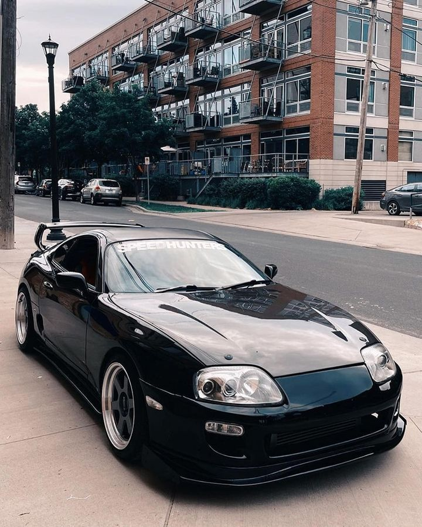
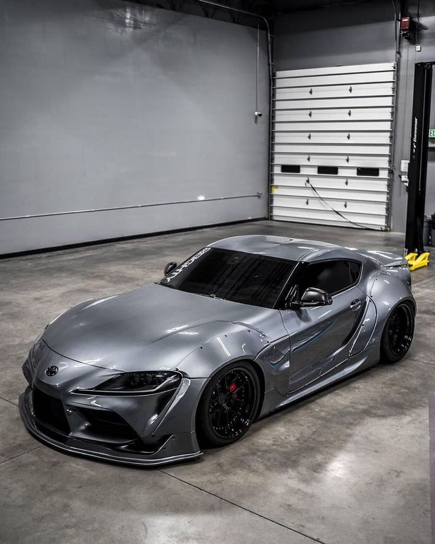
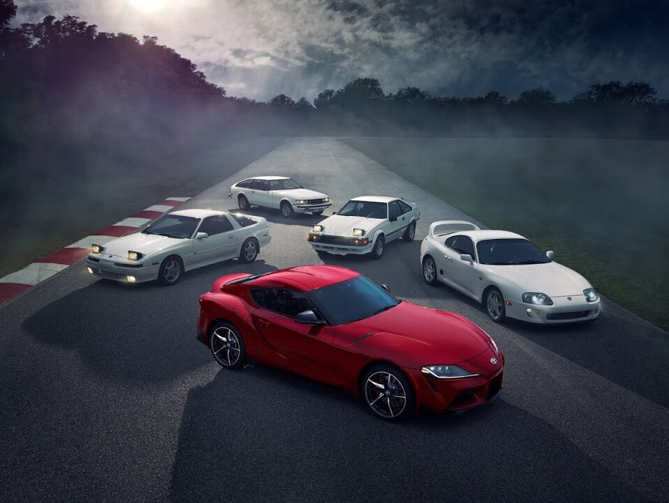

Философия: Последний самурай «золотой лихорадки»
Четвертое поколение Toyota Supra, представленное в 1993 году (код кузова
A80), стало вершиной и одновременно лебединой песней японской спортивной мощной классики 1990-х. Созданная в эпоху, когда инженерные амбиции почти не сдерживались экологическими нормами и соревнованием за удешевление, Supra A80 олицетворяла философию максимальной технологической отдачи ради чистого драйва. Это был GT-кар (Gran Turismo) в чистом виде — мощный, комфортабельный для долгих путешествий, невероятно быстрый и созданный без компромиссов.
Дизайн и конструкция: Аэродинамика и снижение веса
Дизайн, созданный под руководством Исао Тэдзуки, стал эталоном для целого поколения.
- Длинный капот, компактная кабина и короткий задок создавали идеальные спортивные пропорции. Автомобиль получил узнаваемые поднимающиеся фары (до рестайлинга 1996 года) и массивный интегрированный спойлер.
- Кузов был невероятно жестким благодаря широкому применению алюминия (капот, крестовина) и совершенствованию конструкции. Индекс жесткости на кручение был одним из лучших в мире для серийных автомобилей.
- Впервые в истории Supra получила полностью независимую подвеску на двойных поперечных рычагах спереди и сзади , что обеспечивало феноменальную точность управляемости.
Техническое сердце: Рождение мифа 2JZ-GTE
Именно двигатель сделал Supra A80 иконой.
- 2JZ-GE (3.0 л, 220 л.с.): Мощный и надежный атмосферный рядный шестицилиндровый двигатель для версии с автоматической коробкой передач .
- 2JZ-GTE (3.0 л, турбо Twin Turbo, 280 л.с. / 326 л.с. для США): Легендарный двигатель , сердце версии Supra Turbo . Оснащался системой последовательного twin-turbo (две турбины CT12), шестью поршнями на каждый цилиндр (для прочности) и колоссальным запасом прочности . При грамотном тюнинге он легко преодолевал рубеж в 500-700 л.с. на штатных деталях, а в мире drag-racing известны экземпляры с мощностью свыше 1500 л.с. Это сделало его мечтой тюнеров по всему миру.
- Привод — исключительно задний. Коробки передач: 5- или 6-ступенчатая механическая Getrag V160 (желанный раритет) или 4-ступенчатый автомат.
Рестайлинг 1996 года и завершение эпохи
В 1996 году Supra получила обновление: исчезли поднимающиеся фары (уступив место статичным), появились новые колеса, небольшие изменения в интерьере и увеличенные передние тормозные диски. Однако уже к концу 1990-х из-за падения спроса, ужесточения норм и дороговизны производства выпуск A80 для большинства рынков был прекращен, а в 2002 году сошла с конвейера последняя машина для японского рынка. Эпоха «больших» японских GT-купе закончилась.


Философия: Возвращение к истокам в современной реальности
После 17-летнего перерыва Supra вернулась в 2019 году (пятое поколение, код
A90 для купе,
A91 для обновления 2021 г.) в результате знакового партнерства с BMW. Её философия — возрождение духа оригинальной Supra как легкого, азартного и сбалансированного спортивного купе для водителя, но в реалиях XXI века: с жёсткими экологическими рамками, требованиями к безопасности и экономической целесообразностью. Это не попытка скопировать A80, а её духовный преемник, интерпретированный на современный лад.
Платформа, дизайн и конструкция: Немецкие корни, японская душа
- Автомобиль построен на общей с BMW Z4 (G29) платформе. Кузов — несущий, с широким применением алюминия и высокопрочных сталей. Центр тяжести — один из самых низких в классе.
- Дизайн — смелый и спорный, отдает дань уважения A80 (длинный капот, двухместная кабина) через призму современной аэродинамики Toyota. Агрессивные воздухозаборники, двойной «пузырь» на крыше и интегрированный спойлер не оставляют сомнений в спортивном характере.
- Подвеска — полностью независимая, с многорычажной схемой сзади. Активное дифференциал и адаптивное шасси были доступны с завода.
Техническое сердце: Новая эра — турбошестёрка BMW
Вместо легендарного 2JZ под капотом работает немецкий двигатель.
- 2.0 л B48 Turbo (4-цилиндровый, 258 л.с.): Базовый вариант для ряда рынков.
- 3.0 л B58 TwinPower Turbo (рядная 6-цилиндровая, 340-387 л.с.): Основной и самый желанный двигатель. Современный турбомотор с прямым впрыском, обеспечивающий колоссальный крутящий момент с низких оборотов и высокую литровую мощность. В 2021 году мощность была увеличена до 387 л.с. для версии GR Supra.
- Единственная доступная коробка передач — 8-ступенчатый «автомат» ZF с быстрыми переключениями и режимом ручного управления. Привод — задний.
Позиционирование и эволюция
Современная Supra позиционируется как спортивное купе премиум-класса, прямой конкурент Porsche 718 Cayman. Она сделала акцент на азартной управляемости, точных откликах и современной динамике, а не на бесконечном тюнинговом потенциале «железа». В 2021 году появилась ограниченная версия с 6-ступенчатой механической коробкой передач, что стало ответом на главный запрос сообщества фанатов. Также были проведены доработки шасси и увеличение мощности.
A80: Культовая икона и символ эпохи
Toyota Supra A80 — это гораздо больше, чем автомобиль. Она стала:
- Героем поп-культуры: Звездой франшизы «Форсаж», видеоигр (Gran Turismo, Need for Speed) и гонок.
- Символом тюнинга: Благодаря двигателю 2JZ-GTE стала основной платформой для мирового drag-racing и стрит-рейсинга. Её потенциал казался безграничным.
- Объектом инвестиций: Оригинальные, нетронутые экземпляры, особенно с мануальной КПП, сегодня стоят целые состояния, являясь желанными коллекционными предметами.
A90: Современный спортивный инструмент
Supra A90 доказывает, что легенда может жить в новой форме. Её ценность — в:
- Чистом драйве: Идеальной развесовке, отзывчивом рулевом управлении и сбалансированном характере, который высоко оценила автоспортивная пресса.
- Технологичности: Соответствии всем современным стандартам безопасности, оснащению и эффективности.
- Доступности эмоций: Это готовый, острый спортивный автомобиль с завода, не требующий доработок для получения удовольствия.
Сравнительная суть двух эпох
- A80 (1993-2002): Аналоговая мощь, инженерный максимализм, бесконечный потенциал, образ «короля улиц». Автомобиль-легенда, созданная в уникальное время.
- A90 (2019-н.в.): Цифровая точность, сфокусированная управляемость, эффективная динамика, образ современного спортивного инструмента. Автомобиль-драйв, созданный в эпоху ограничений.
Заключение
Toyota Supra — это уникальный феномен в мире автомобилей. A80 останется непревзойденным символом мощности и дерзости японского автопрома 90-х, чья слава только растет с годами. A90 стала успешным и уважаемым возвращением, доказавшим, что дух Supra можно переосмыслить, сохранив суть — острые ощущения от вождения заднеприводного спортивного купе. Вместе они образуют мост между двумя эпохами, объединенные одним именем и одной страстью — к скорости и свободе на дороге.

 89081317488
89081317488

 8(908)131-74-88
8(908)131-74-88.svg) fayther2@yandex.ru
fayther2@yandex.ru